v3（2026-10-30）新增：提示词生成、交互存档 —— 每次 AI 学伴交互可存为新版本，得到一份可迁移提示词（扔到豆包/DeepSeek 从零生成完整 BP）与一份交互全过程文档，均可下载；教师端可查看全体学生的全部存档。 v2（2026-10-30）相对 v1 的核心变化：AI 从"答案机"改成"守门人"，承重决策卡独立页面被取消、并入 AI 学伴对话。 v1 / v2 手册保留在使用手册_v1_20261030.md/使用手册_v2_20261030.md，勿覆盖。
一个限定工作区。学生在这里与 AI 协作写创业计划书，但AI 不给答案——它给方法论、派取证任务，学生必须把从外部拿到的真实信息带回来，AI 验证后才放行。
课堂场景设定（本系统全部演示与引导文案的背景）： 湖南体育职业学院学生创业，项目落在长沙市雨花区体育新城一带，业态为青少年体育培训 / 场馆时段运营 / 赛事与团建承接。事件库的 20 条冲击全部基于这一地域情境（梅雨季、中考体育政策、公办场馆分流、教练挖角等）。
要解决的真问题：学生把写作任务直接扔给豆包/免费 AI，得到一份通顺但空洞的计划书，什么也没学到。本系统让"拿到答案"的路径失效——AI 会拒绝直接回答，反而给他一个必须出门去做的任务。
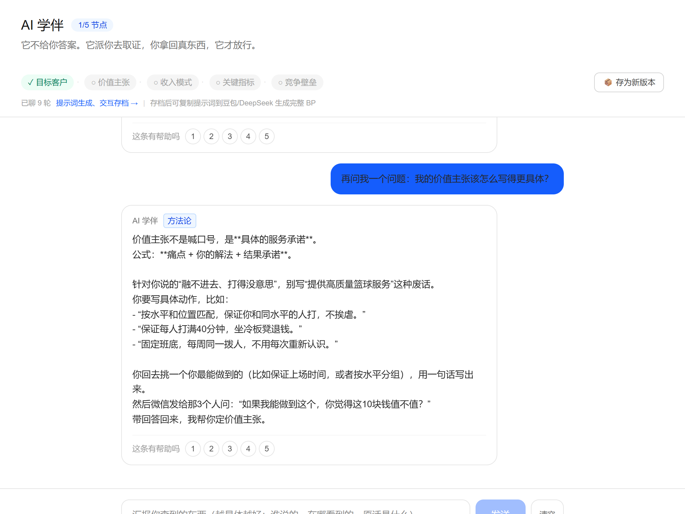
和 AI 学伴对话 → 它派你去取证
↓
你出去访谈/查数据，把原话带回来
↓
AI 判定：证据成立 → 放行 1 个承重节点；不成立 → 打回，再派一次任务
↓
5 个节点全走通 + 4 个月度跑机回合全跑完
↓
一键「汇总生成完整 BP」→ 末尾附「模拟投资人追问」打开 /student/chat，页面会直接显示 AI 学伴的开场（不需要先填任何表单）。点下方任意一个快捷句即可开口，也可以直接打字。
第一次可能会碰壁——问"我的客户应该是谁"，AI 会拒绝直接回答，而是给你一个具体到当天的任务（去哪、拦几个人、问哪三句）。这是设计如此，不是系统坏了。
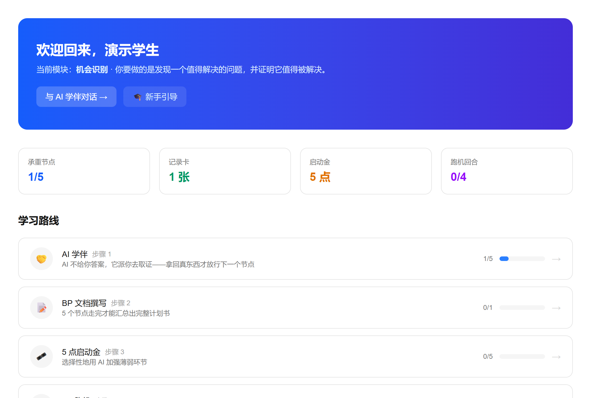
| 页面 | 看什么 |
|---|---|
/teacher/dashboard | 承重节点进度、跑机回合、闸门告警；右上角「↺ 重置学生数据」 |
/teacher/events | 20 条长沙情境事件，可按本学期时事增删改 |
/student/records | 以任意学生身份进入，看完成度检查表缺哪几项 |
首次打开任意页面会自动弹出，看完自动记住；学生主页有「🎓 新手引导」可重看。
| 步 | 讲什么 |
|---|---|
| 1 | 系统定位：AI 不给答案，分打给你做了什么判断 |
| 2 | AI 学伴（守门人）与 5 个承重节点 |
| 3 | BP 跑机 4 回合 |
| 4 | 5 点启动金券商店 |
| 5 | 记录卡与完成度检查表 |
| 6 | 提示词生成、交互存档：提示词可带走 + 交互文档 |
| 7 | BP 文档汇总生成 + 教师端 |
/student/chat（主入口，先来这里）页面结构
| 徽章 | 含义 |
|---|---|
| ✓ 证据成立 | 你带回来的东西被认可，对应节点放行 |
| ✗ 证据不足 · 打回 | 证据不够或逻辑跳步，AI 会再派一次更具体的任务 |
| → 已派任务，去取证 | 你空手来问，AI 不回答，只派任务 |
| 方法论 | 你问的是方法，AI 直接讲 |
AI 的判定标记（教师若要核对，看这里） AI 回复在数据库里的原文以 [[TYPE=...|VERDICT=...|UNLOCK=...|COMMIT=...]] 开头，服务端据此决定是否放行节点。前端已剥离该标记，学生看不到。
/student/sim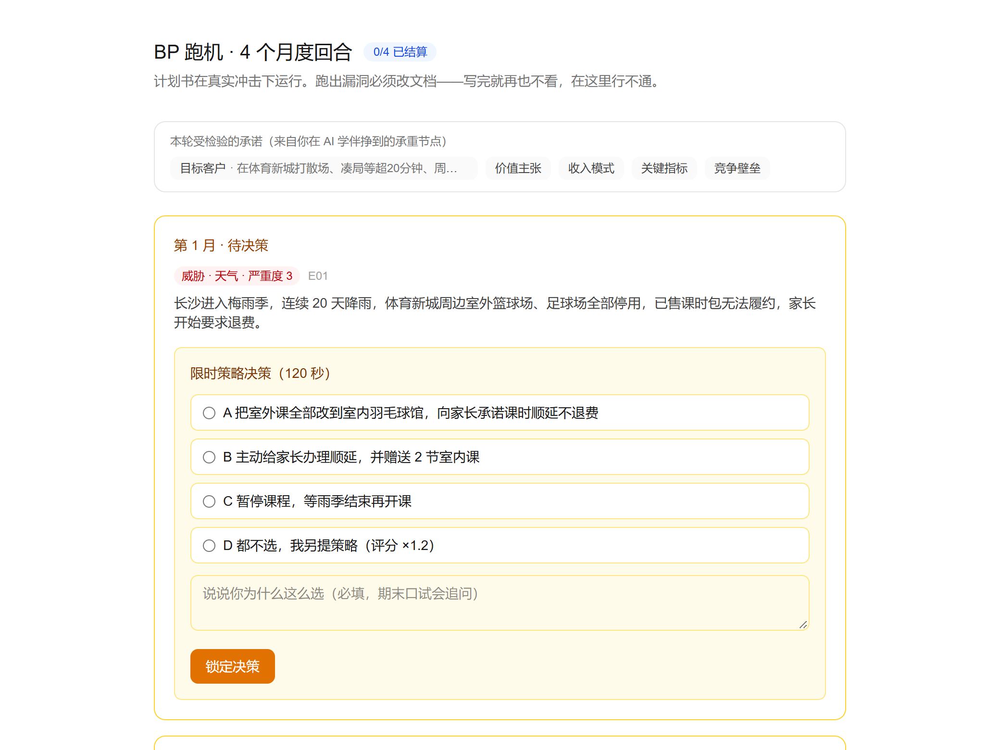
/student/bp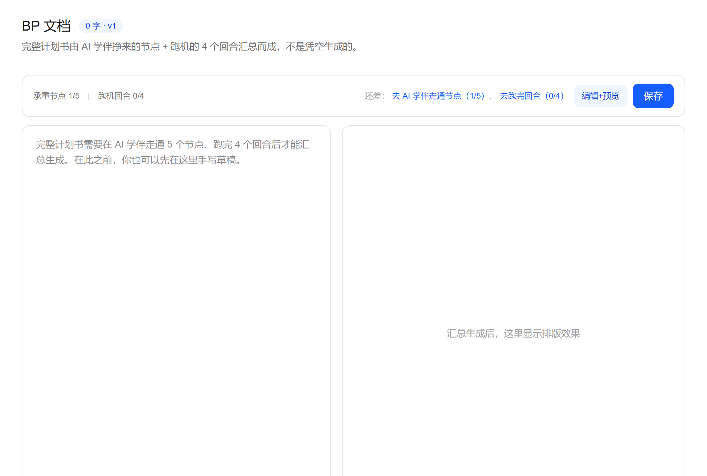
顶部有一条门禁状态条，实时显示 承重节点 x/5 与 跑机回合 x/4：
汇总稿的结构：
| 章节 | 内容来源 |
|---|---|
| 一～五 | 5 个承重节点的承诺 + 你当时的取证原文 |
| 六 | 4 个跑机回合：冲击 / 你的应对 / 你的理由 / 跑出来的结果 |
| 七 | 模拟投资人的三个追问（AI 生成，只许使用你提供的事实） |
| 八 | 团队 / 执行计划 / 财务预测 / 风险——系统不代写，留出空章 |
/student/archives（新增）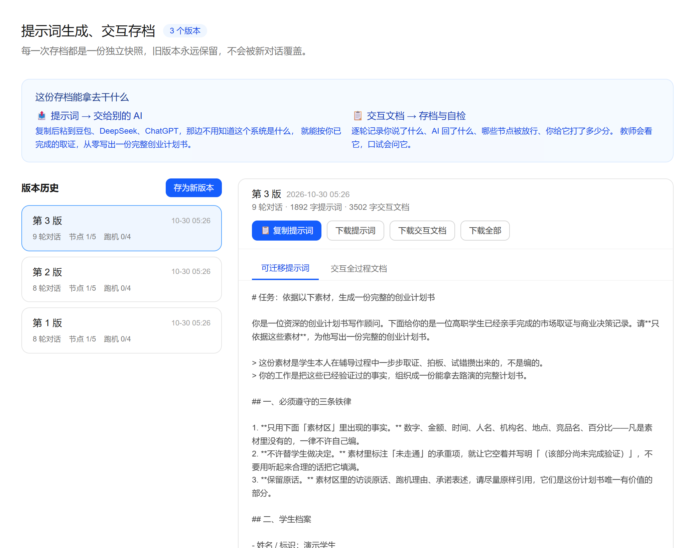
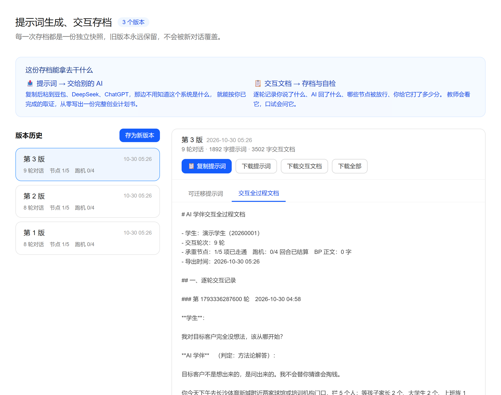
什么时候用：和 AI 学伴聊完一轮，点对话页顶部的「📦 存为新版本」。
版本机制：每存一次是一个新版本（v1 → v2 → v3…），旧版本永远保留，不会被新对话覆盖。 存档是「那一刻」的快照——你后来又聊了 5 轮，v1 里仍然是当初那 8 轮。
两份产物
| 产物 | 怎么用 | 说明 |
|---|---|---|
| 可迁移提示词 | 「📋 复制提示词」→ 粘到豆包 / DeepSeek / ChatGPT | 自包含。对方不需要知道这个系统是什么，就能按你已完成的取证从零生成一份完整 BP |
| 交互全过程文档 | 「下载交互文档」 | 逐轮记录：你说了什么、AI 回了什么、判定结果、哪些节点放行了、你给它打了多少分 |
提示词里有什么
没走通的节点会如实留白——提示词里写「该项未走通，尚未完成验证，不要编造」， 外部 AI 会照做，写成「该部分尚未完成验证」并列出待补清单，不会替你想一个。
三个下载按钮：下载提示词 / 下载交互文档 / 下载全部（合订本，Markdown 文件）。
/student/records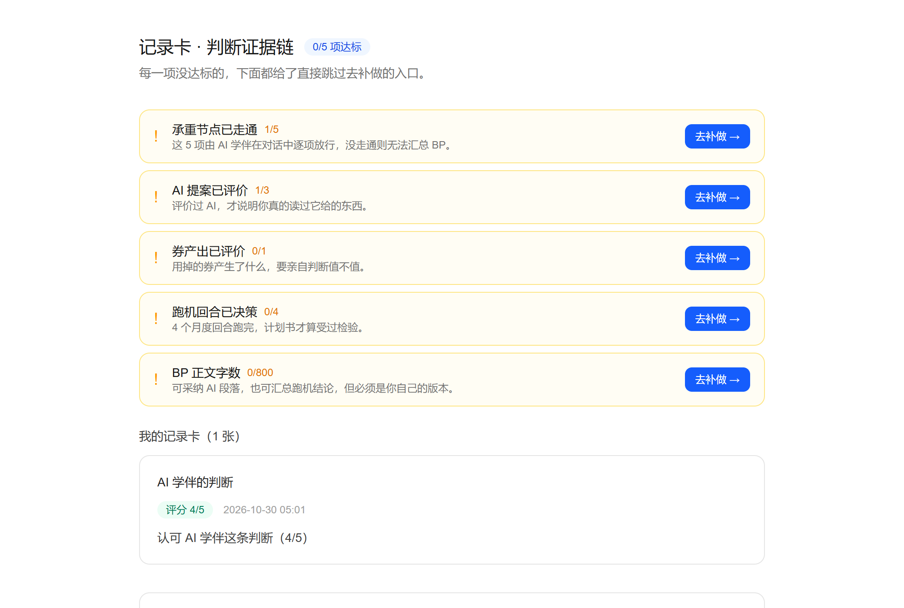
页首是完成度检查表，5 项：
| 检查项 | 达标线 | 未达标时 |
|---|---|---|
| 承重节点已走通 | 5/5 | 按钮「去补做 →」跳到 AI 学伴 |
| AI 提案已评价 | 3 条 | 跳到 AI 学伴 |
| 券产出已评价 | 1 条 | 跳到券商店 |
| 跑机回合已决策 | 4/4 | 跳到 BP 跑机 |
| BP 正文字数 | 800 字 | 跳到 BP 文档 |
下方是记录卡列表 + 手动补记表单。
/student/coupons（规则未变）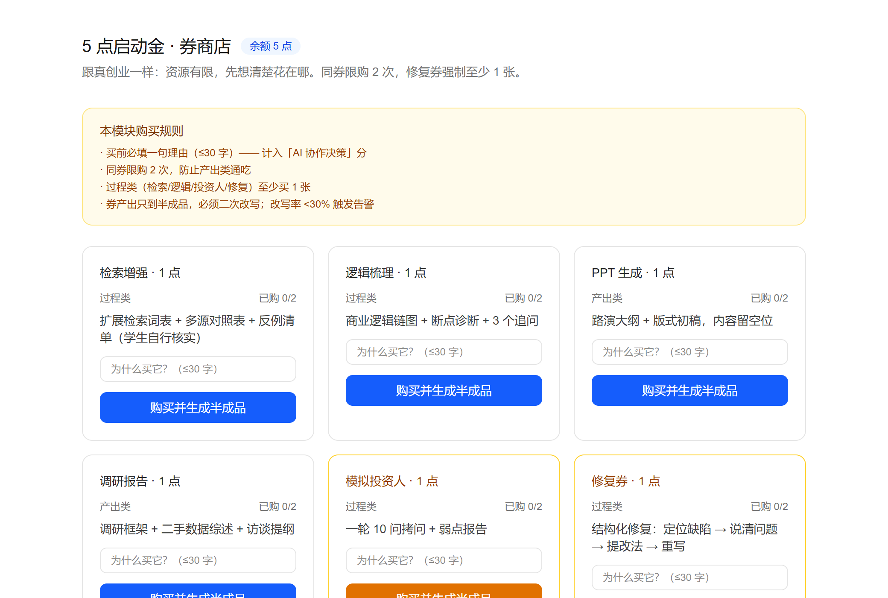
5 点启动金，1 点 1 券：检索增强 / 逻辑梳理 / PPT / 调研报告 / 模拟投资人 / 修复券。同券限购 2 次，至少留 1 点给修复券。
| 维度 | 权重 | 看什么 | 数据来源 |
|---|---|---|---|
| 论证质量 | 40% | BP 内容本身：逻辑链、证据、可行性 | BP 文档 |
| 过程留痕 | 30% | 取证的真实性、记录卡质量、修订深度、跑机决策理由 | 记录卡 / 修订记录 / 跑机 |
| AI 协作决策 | 20% | 花点是否对症、理由是否成立、改写是否投入 | 券账本 / 决策过程 |
| 表达 | 10% | 成稿呈现（路演、版式） | BP 文档 / PPT |
一句话原则：分打给"人做了什么判断"，不打给"AI 产出了多漂亮"。 v2 新增的直接证据：取证原文的密度与具体程度（有没有名字、金额、原话）本身就是最好的评分依据。
| # | 闸门 | 触发条件 | 后果 |
|---|---|---|---|
| 1 | 低分附证据 | 评分 ≤2 且未填证据 | 拒绝写入，要求补齐证据 |
| 2 | 教师抽样覆核 | 系统随机抽样 | 教师端出现待复核记录 |
| 3 | AI 退让上限 | 连续低分要求 AI 退让 | 超限后 AI 不再退让，转为要求说明 |
| 4 | 口试抽查 | 期末 / 阶段性 | 追问决策与理由，答不上来扣分 |
| 5 | 改写率校验 | 券产出直接进 BP，改动率 < 30% | 自动告警，过程分打折 |
v2 追加的结构性防博弈：学生无法靠"多聊几轮"蒙混过关——AI 只在证据成立时放行，聊得再久也拿不到节点。
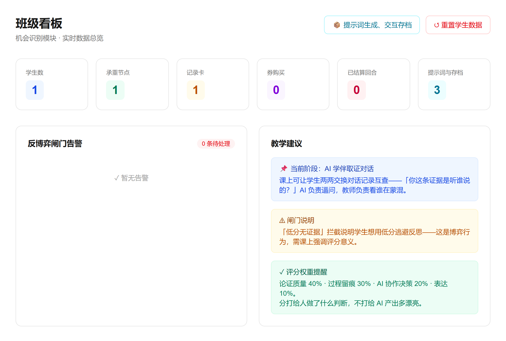
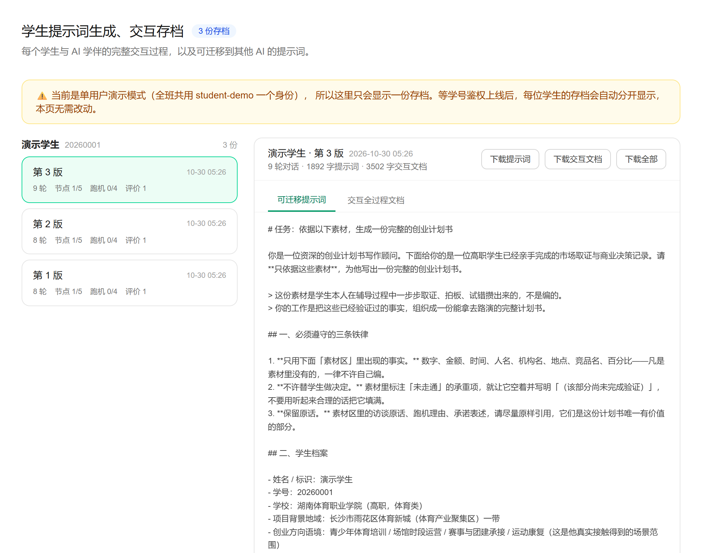
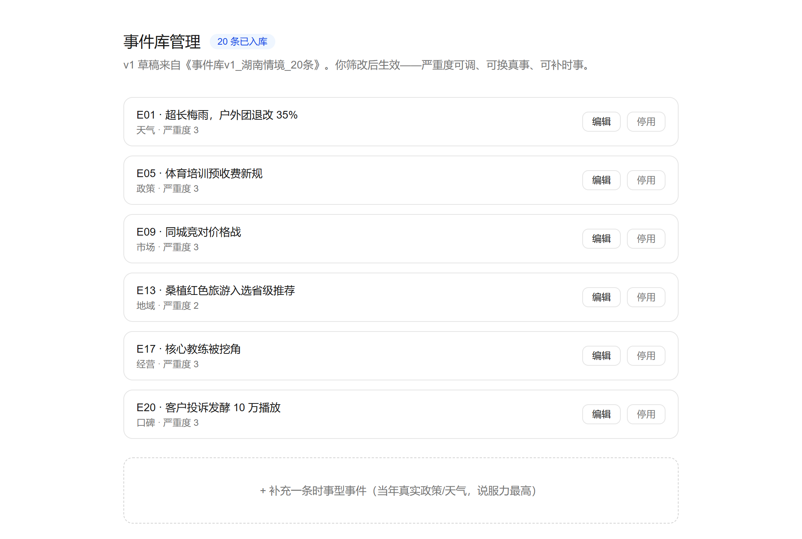
| 页面 | 用途 | 关键操作 |
|---|---|---|
班级看板 /teacher/dashboard | 全班进度与风险 | 看 6 张统计卡（含「提示词与存档」计数）、闸门告警列表、教学建议；右上角「📦 提示词生成、交互存档」直达；「↺ 重置学生数据」 |
量规配置 /teacher/rubric | 调整四维权重与评分要点 | 修改权重、增删评分要点（期末前锁定） |
抽样覆核 /teacher/review | 抽查记录卡与决策证据 | 通过 / 退回补充 |
事件库 /teacher/events | 管理跑机事件 | 增删改事件、调严重度、每学期补时事事件 |
提示词生成、交互存档 /teacher/archives | 看所有学生的提示词与交互文档 | 按学生分组列出全部版本，点开可看全文，可下载 Markdown |
「提示词生成、交互存档」页怎么用
⚠️ 当前是单用户演示模式（全班共用 student-demo 一个身份），所以这个页面目前只会显示一份存档。 接上学号鉴权后，每位学生的存档会自动分开显示，本页无需任何改动。
「↺ 重置学生数据」会做什么
用于换新学生演示或学期初清场。执行前务必确认没有要保留的学生数据。
教师端三条建议
素材区全是"据我了解""行业普遍认为"的，就是没干活。
Q1：AI 回复很慢或报错 429？ 429 是 API 限流——同一把 key 短时间内调用过多。全班同时上课时会触发，等待十几秒即可恢复。长期方案是换成并发额度更高的模型或加备用 key。模型可在 .env.local 的 DASHSCOPE_MODEL 调整。
Q2：AI 为什么不直接回答我的问题？ 这是设计如此。它不掌握你项目本地的真实情况，编出来的答案一出去就露馅。它的职责是给你"怎么去查"的路线。想让 AI 变有用，先去查。
Q3：数据存在哪？会不会丢？ 服务器 SQLite 单文件 /www/wwwroot/bp-harness/data/harness.db。重新部署源码时已排除 data 目录（不会覆盖线上数据），但仍建议定期备份。
Q4：为什么我的券不能买？ 三种可能：①余额不足 ②该券已买 2 次 ③理由没填（或超过 30 字）。
Q5：为什么我的评分被拒？ 评分 ≤2 时必须写证据（引文、截图描述、数据来源）。这是防"压分换 AI 退让"的闸门。
Q6：跑机事件是随机的吗？ 不是随机的，但也不是投骰子——它按 天气 / 政策 / 市场 / 经营 四类铺开，保证四个月受的冲击不重样。被冲击的对象是你在 AI 学伴挣到的 5 个承诺。
Q7：为什么不让我直接写 BP？ 可以写。但完整稿必须等 5 个节点和 4 个回合都齐了才能汇总生成——没挨过检验的计划书不算写完。草稿随时可以在 BP 页手写。
Q8：能重看新手引导吗？ 能。学生主页 →「🎓 新手引导」按钮。
| 项目 | 内容 |
|---|---|
| 技术栈 | Next.js 15 + TypeScript + Tailwind 4 + Drizzle ORM + better-sqlite3 |
| 线上地址 | http://47.107.31.231:3005/ |
| 服务器 | 阿里云 ECS 47.107.31.231，/www/wwwroot/bp-harness，pm2 进程 bp-harness，端口 3005 |
| 本地开发 | cd bp-harness && npx next dev -p 3457 |
| 构建 | 服务器 export PATH=/www/server/nodejs/v20.18.0/bin:$PATH 后 rm -rf .next && NODE_OPTIONS=--max-old-space-size=768 npx next build |
| 事件库重播种 | node scripts/seed-events-changsha.mjs（长沙体育新城情境 20 条） |
| 数据文件 | data/harness.db |
| 环境变量 | .env.local：DASHSCOPE_API_KEY、DASHSCOPE_BASE_URL、DASHSCOPE_MODEL |
| 登录状态 | 暂未做鉴权，全班共用演示身份 student-demo（正式使用前必须补） |
⚠️ 已踩过的坑：①起 Next.js 之前必须先清.next；②本地生产构建会被 WorkBuddy 安全钩子拦截（EPERM），构建一律在服务器做；③上传源码时必须排除./data，否则会覆盖线上数据库。
| 版本 | 内容 |
|---|---|
| v1.0（10-30 上午） | 全骨架 + API 连库 + 真实 AI 对话 + BP 编辑器 + 教师看板 |
| v2.0（本版） | AI 学伴守门人模式 + 承重节点对话内放行 + 记录卡完成度检查台 + 跑机→BP 汇总闭环 + 长沙体育新城事件库 20 条 + 教师端一键重置 |
| 待办 | 学号登录鉴权（正式用前必须做）、每日自动备份 crontab、API 限流应对、BP Skill 评分模块、口试模块、xAPI 导出 |
本手册位置：bp-harness/使用手册_v3_20261030.md。更新请另存新版本，勿覆盖。